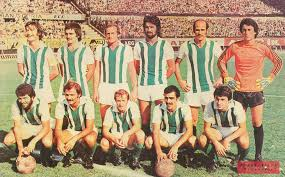

.jpg)
Giresunspor, sadece bir spor kulübü değil, Karadeniz’in hırçın dalgaları ile yemyeşil doğasının birleştiği noktada filizlenen büyük bir aidiyetin adıdır. 1967 yılında şehrin spor kültürünü tek bir çatı altında birleştirmek amacıyla kurulan kulüp, o günden bugüne onuruyla mücadelesini sürdürmektedir. Giresunspor’un renkleri olan Yeşil ve Beyaz, sadece birer renk değil, şehrin ruhunu ve karakterini simgeleyen güçlü sembollerdir. Yeşil, Giresun’un eşsiz doğasını ve fındık bahçelerini; Beyaz ise saflığı ve dürüstlüğü temsil eder.
Giresunspor’un temelleri, 1967 yılının sıcak bir Nisan gününde atılmıştır. Şehrin önde gelen üç kulübü; Yeşiltepe, Akıngençlik ve Beşiktaşspor, Giresun ismini ulusal arenalarda en iyi şekilde temsil etmek için bir araya gelmiştir. Kulübün renkleri olan Yeşil, Giresun'un eşsiz doğasını ve fındık bahçelerini; Beyaz ise saflığı ve dürüstlüğü temsil etmektedir. Amblemindeki Çotanak ise, bu şehrin can damarı olan fındığın en saf halidir.

Giresunspor, kuruluşundan kısa bir süre sonra Türk futbolunda ağırlığını hissettirmeye başlamıştır. Özellikle 1970 ve 1977 yılları arasındaki dönem, kulübün "Altın Çağı" olarak anılır. O dönemki adıyla 1. Lig (Süper Lig) içerisinde fırtınalar estiren Çotanaklar, Anadolu futbolunun İstanbul devlerine karşı başkaldırısının en önemli temsilcilerinden biri olmuştur. 44 yıllık uzun bir aranın ardından 2021 yılında tekrar en üst seviyeye dönüş yapması, bu köklü camianın küllerinden doğma yeteneğinin en büyük kanıtıdır.
.jpg)
Giresunspor'u diğer takımlardan ayıran en büyük güç, arkasındaki sarsılmaz halk desteğidir. Giresun sokaklarında her dükkanda bir atkı, her balkonda bir bayrak görmek mümkündür. Genç Çotanaklar ve diğer taraftar grupları, takımı sadece galibiyetlerde değil, en zorlu deplasmanlarda ve alt lig mücadelelerinde de yalnız bırakmamıştır. Bu sevgi, nesilden nesile aktarılan bir miras, bir "Çotanak Ruhu" olarak tanımlanır.
Bugün Giresunspor, yeni evi olan Çotanak Spor Kompleksi ile modern futbolun gerekliliklerini yerine getirmeye çalışmaktadır. Altyapı yatırımları, sürdürülebilir mali yapı hedefleri ve Giresunlu gençleri Türk futboluna kazandırma vizyonuyla kulüp, geleceğe emin adımlarla yürümektedir. Sadece futbol değil, her branşta Giresun'un adını zirveye taşıma hedefi, kulübün en büyük motivasyon kaynağıdır.
.jpg)
"Yerel değerlerinden güç alarak ulusal ve uluslararası arenada rekabetçi, altyapısıyla örnek gösterilen ve Giresun ismini her zaman en üst seviyede temsil eden bir spor kulübü olmak."
"Sporun birleştirici gücünü kullanarak Giresun gençliğine spor kültürünü aşılamak, centilmenlikten ödün vermeden sahada en iyi mücadeleyi sergilemek ve taraftarlarımızla kurduğumuz güçlü bağı her geçen gün daha da pekiştirmek."